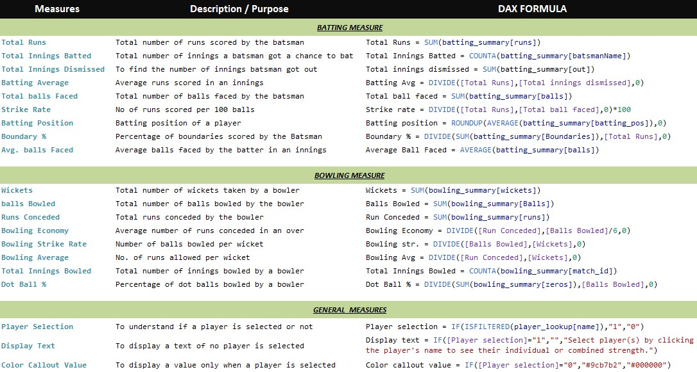

T20 WORLD CUP DATA ANALYTICS
Tools used in this project


OBJECIVE
Our aim is to form a cricket team comprising 11 players from the ICC Men's T20 World Cup 2022.

Data Collection and Transformation
To start our project, we needed data about the ICC T20 World Cup 2022. So, I used a tool called Scrapy in Python to scrape data from ESPN Cricinfo, a cricket website. Then, I converted this data into CSV format using the Pandas library in Python. As a result, we now have three separate datasets: match_summary, batting_summary, and bowling_summary. It's likely that these datasets hold detailed information about match summaries, how well players batted, and how well they bowled in the ICC T20 World Cup 2022.
# First let's import the packages we will use in this project
import scrapy
import pandas as pd
from datetime import datetime
import re
# For Match
teamf=[]
teams=[]
margin=[]
ground=[]
date=[]
match_1=[]
winner=[]
# For Batsman
match=[]
teaming_bat=[]
battingor=[]
batt=[]
run=[]
ball=[]
four=[]
six=[]
srs=[]
outs=[]
match_no=[]
matchno=[]
# For Bowler
teaming_bow=[]
bow=[]
over=[]
maiden=[]
wickets=[]
economy=[]
zes=[]
fos=[]
sixb=[]
wides=[]
noBalls=[]
runb=[]
wic=[]
match_bow=[]
matchnob=[]
class Level2Spider(scrapy.Spider):
name = "level2"
allowed_domains = ["www.espncricinfo.com"]
start_urls = ["https://www.espncricinfo.com/series/icc-men-s-t20-world-cup-2022-23-1298134/namibia-vs-sri-lanka-1st-match-first-round-group-a-1298135/full-scorecard"]
def parse(self, response):
infon=response.xpath('//div[contains(@class,"ds-text-tight-m ds-font-regular ds-text-typo-mid3")]/text()').get()
match_1.append(infon.split(",")[0].strip(' (N)'))
if infon is not None:
if 'Final' in infon:
ground.append(infon.split(",")[1].strip())
date.append(datetime.strptime(((infon.split(",")[2].strip())+" "+(infon.split(",")[3].strip())), '%B %d %Y').strftime('%d-%b-%Y'))
else:
ground.append(infon.split(",")[2].strip())
date.append(datetime.strptime(((infon.split(",")[3].strip())+" "+(infon.split(",")[4].strip())), '%B %d %Y').strftime('%d-%b-%Y'))
team=response.xpath('//div[contains(@class,"r-1")]/a/span/text()').getall()
for n, teamg in enumerate(team):
if n==0 :
teamf.append(teamg)
else:
teams.append(teamg)
win=response.xpath('//p[contains(@class,"m")]/span/text()').get()
win=re.sub(r'\([^)]*\)', '', win).strip()
winn=(win.split(" "))
# This section collect winner and margin data
if win in ["No result", "Match abandoned without a ball bowled"]:
winner.append(win)
margin.append(" - ")
else:
n=len(winn)
if n==6:
winner.append(winn[0]+" "+winn[1])
margin.append(winn[4]+" "+winn[5])
else:
winner.append(winn[0])
margin.append(winn[3]+" "+winn[4])
# Batsman & Bowler data
if 'Match abandoned' not in win:
for n in range(4):
tbody=response.xpath('//div/table/tbody')[n]
if n in [0,3]:
t=0 # Represents the index of the first team
o=1 # Represents player batting position
else:
t=1 # Represents the index of the second team
o=1
# Batsman data
if n==0 or n==2:
batsman=tbody.xpath('.//tr/td[1]/div/a/span/span/text()[1]').getall()
runs=tbody.xpath('.//tr[@class=""]/td[3]/strong/text()').getall()
balls=tbody.xpath('.//tr/td[4]/text()').getall()
fours=tbody.xpath('.//tr/td[6]/text()').getall()
sixs=tbody.xpath('.//tr/td[7]/text()').getall()
sr=tbody.xpath('.//tr/td[8]/text()').getall()
for n in range(len(batsman)):
teaming_bat.append(team[t])
match.append(team[0]+" vs "+team[1])
battingor.append(o)
o+=1
batt.append(batsman[n].strip())
run.append(runs[n].strip())
ball.append(balls[n].strip())
four.append(fours[n].strip())
six.append(sixs[n].strip())
srs.append(sr[n].strip())
out=tbody.xpath('.//tr[@class=""]/td[contains(@class,"x !")]')[n].xpath('.//text()').get().strip()
if out=='not out':
outs.append(out)
else:
outs.append('out')
matchno.append(response.xpath('//div[contains(@class,"r ds-t")]/text()[1]').get().split(',')[0].strip(' (N)'))
# Bowlers data
else:
bowlerName=tbody.xpath('.//tr/td[1]/div/a/span/text()').getall()
overs=tbody.xpath('.//tr/td[2]/text()').getall()
maidens=tbody.xpath('.//tr/td[3]/text()').getall()
run_bow=tbody.xpath('.//tr/td[4]/text()').getall()
economyb=tbody.xpath('.//tr/td[6]/text()').getall()
zs=tbody.xpath('.//tr/td[7]/text()').getall()
fs=tbody.xpath('.//tr/td[8]/text()').getall()
ss=tbody.xpath('.//tr/td[9]/text()').getall()
wide=tbody.xpath('.//tr/td[10]/text()').getall()
noBall=tbody.xpath('.//tr/td[11]/text()').getall()
for n in range(len(bowlerName)):
match_bow.append(team[0]+" vs "+team[1])
teaming_bow.append(team[t])
bow.append(bowlerName[n].strip())
over.append(overs[n].strip())
maiden.append(maidens[n].strip())
runb.append(run_bow[n].strip())
wickets=tbody.xpath('.//tr/td[5]')[n].xpath('.//span/strong/text()').get()
if wickets==None:
wic.append('0')
else:
wic.append(wickets)
economy.append(economyb[n].strip())
zes.append(zs[n].strip())
fos.append(fs[n].strip())
sixb.append(ss[n].strip())
wides.append(wide[n].strip())
noBalls.append(noBall[n].strip())
matchnob.append(response.xpath('//div[contains(@class,"r ds-t")]/text()[1]').get().split(',')[0].strip(' (N)'))
# Next page url
next_url=response.xpath('//div/a[contains(@class,"ds-group ds-inline-flex ds-items-center ds-ml-4")]/@href').get()
if next_url is not None:
url=next_url.replace('live-cricket-score','full-scorecard')
next_page='https://www.espncricinfo.com'+url
print(next_page)
yield response.follow(next_page,callback=self.parse)
# Making csv file with pandas dataframe
# Match data
mat= {'ground':ground,'date':date,'match':match_1,'winner':winner,'margin':margin,'team1':teamf,'team2':teams}
m=pd.DataFrame(mat)
m.to_csv('match_summary.csv',index=False)
# Bowling data
bowf ={'match':match_bow,'bowlingTeam':teaming_bow,'bowlerName':bow,'overs':over, 'maiden':maiden,
'runs':runb,'wickets':wic, 'economy':economy,'0s':zes,'4s':fos,'6s':sixb,'wides':wides,'noBalls':noBalls,'match_id':matchnob}
dfbow=pd.DataFrame(bowf)
dfbow.to_csv('bowling_summary.csv',index=False)
# Batting data
bat={'match':match,'battingTeam':teaming_bat,'batting_pos':battingor,'batsmanName':batt,'runs':run,'balls':ball,
'fours':four,'sixs':six, 'sr':srs,'out':outs,'match_no':matchno,}
dfbat=pd.DataFrame(bat)
dfbat.to_csv('batting_summary.csv',index=False)
I used the following code to extract player information from ESPN Cricinfo, specifically focusing on those who took part in the ICC T20 World Cup 2022.
# First let's import the packages we will use in this project
import scrapy
class PlayerSpider(scrapy.Spider):
name = "player"
allowed_domains = ["www.espncricinfo.com"]
start_urls = ["https://www.espncricinfo.com/series/icc-men-s-t20-world-cup-2022-23-1298134/afghanistan-squad-1334760/series-squads"]
def parse(self, response):
divs=response.xpath('//div[@class="ds-relative ds-flex ds-flex-row ds-space-x-4 ds-p-3"]')
# team name
name1=divs.xpath('//span[@class="ds-text-title-xs ds-font-bold ds-text-typo"]/text()')[1].get()
name2=name1.replace("squad","")
teamName=name2.replace("Squad","").strip()
# plyer information
for n,div in enumerate(divs):
playerName=div.xpath('.//a/span/text()').get().strip()
playingRole=div.xpath('.//p/text()').get().strip()
battingStyle=div.xpath('.//div[@class="ds-justify-between ds-text-typo-mid3"]/div[2]/span[2]/text()').get()
bowlingStyle=div.xpath('.//div[@class="ds-justify-between ds-text-typo-mid3"]/div[3]/span[2]/text()').get()
yield {'name':playerName,'team':teamName ,'playingRole':playingRole,'battingStyle':battingStyle,'bowlingStyle':bowlingStyle}
# getting team squad links
links=response.xpath('//div[@class="ds-p-0"]/a/@href').getall()
for n,link in enumerate(links):
if n>0:
yield response.follow(url=link, callback=self.parse)
Enhancing Analysis with Calculated Columns and Dynamic Measures
In the subsequent phase of the project, I maximized the potential of the collected data. By incorporating calculated columns, I introduced supplementary insights right into the dataset. These fixed values enriched our analysis. Moreover, by utilizing dynamic measures, I performed real-time calculations that enabled deeper data exploration and facilitated the creation of interactive visuals.
Measures
Colculated Columns


{kind=link}
{kind=link}
{kind=link}